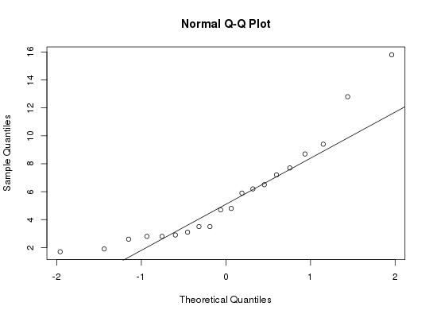

Data for Exercise 6.95
A data frame with 20 observations on the following variable.
Kitchens, L. J. (2003) Basic Statistics and Data Analysis. Duxbury
str(Phone)#> 'data.frame': 20 obs. of 1 variable: #> $ time: num 12.8 3.5 2.9 9.4 8.7 3.5 4.8 7.7 5.9 6.2 ... #>attach(Phone) qqnorm(time)qqline(time)shapiro.test(time)#> #> Shapiro-Wilk normality test #> #> data: time #> W = 0.86994, p-value = 0.01172 #> #>#> #> One-sample Sign-Test #> #> data: time #> s = 9, p-value = 0.7483 #> alternative hypothesis: true median is greater than 5 #> 95 percent confidence interval: #> 3.058559 Inf #> sample estimates: #> median of x #> 4.75 #> #>#> Conf.Level L.E.pt U.E.pt #> Lower Achieved CI 0.9423 3.1000 Inf #> Interpolated CI 0.9500 3.0586 Inf #> Upper Achieved CI 0.9793 2.9000 Inf #>detach(Phone)